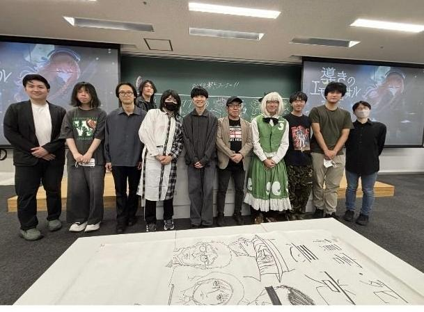

お知らせ・活動実績
NEWS & REPORTS
2026.11.01告知公式サイトを移転しました！→
出展予定告知冬コミ（C109）2日目に同人ソフト枠で出展予定です→
制作中作品ノベルゲーム『導きのエモーショナル』新作は、冬コミでの完成を予定しています→
2026.10.31活動報告桜理祭と明大祭に行ってきました！→
2026.10.18活動報告第10回三茶祭、無事終了しました！→
2026.09.22活動報告オーストラリアで国際交流をしてきました！→
2026.08.23活動報告新木場でバーベキュー大会をしました！→
2026.08.19活動報告ZONeとMonster Energyから差し入れをいただきました！→
2026.07.23告知コミケ108のお品書きがついに完成しました！→
2026.07.11活動報告第65回日本SF大会の主催団体となりました！→
2026.06.28活動報告日大文理ゲーム制作会と合同でイベントを開催！→
2026.04.17告知部員数が200人になりました！→
2026.03.31告知ゲーム製作プロジェクトが「自主創造プロジェクト」に採択されました！→
2025.11.27活動報告日本大学新聞（2025年11月号）に掲載されました！→
2025.10.19活動報告第9回三茶祭に出展しました！→
2025.08.31活動報告第63回日本SF大会（かまこん）に参加しました！→
2025.08.17活動報告コミケ106で『キカイガクエン』が完売しました！→
2025.04.29活動報告ニコニコ超会議2025に参加しました！→
活動実績

2026.10.18
第10回三茶祭、無事終了しました！

2026.07.23
コミケ108のお品書きがついに完成しました！

2026.07.11
第65回日本SF大会の主催団体となりました！

2026.06.28
日大文理ゲーム制作会と合同でイベントを開催！
これまでの主な実績
日本SF大会への参加（2025年）／冬コミC105・夏コミC106への出店／ニコニコ超会議への参加／日大新聞への掲載／三茶キャンパスアンバサダーのInstagramへの掲載